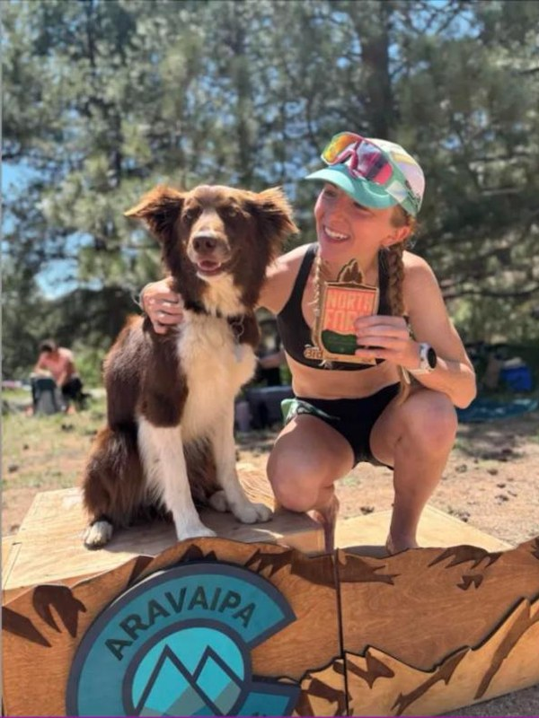

About Me

My Background
I hold degrees in Nutrition and Kinesiology from the University of New Hampshire, complemented by a dietetic internship with a concentration in sports nutrition. I am also a certified UESCA running coach and a certified strength coach. I’ve had the privilege of coaching over 100 athletes—from those training for their first 5K to seasoned ultra-endurance athletes—and have completed over 30 ultras myself, with multiple wins across various distances.
My Philosophy on Nutrition
Food is fuel, but it’s so much more than that. I believe proper fueling should be sustainable, meet your nutrient requirements, and be enjoyable. I prioritize education, empowering my clients with the knowledge and skills to confidently nourish themselves for sport and life—today, tomorrow, and for the rest of their journey.
My Approach to Training
I believe training should be personalized, flexible, and purposeful. Whether you’re aiming to compete for the win, set a new PR, or just have fun, I tailor running programs based on your goals. We’ll combine fun easy runs to build aerobic capacity with higher-intensity workouts to increase speed and power, creating a more efficient runner! Every athlete is unique, so expect flexibility to accommodate other hobbies and lifestyle factors along the way.
I believe that a stronger runner is a faster runner. That’s why strength training will be included in your running programming. Building strength improves movement patterns, stability, injury prevention, and resilience. I emphasize unilateral work and focus on developing durability and fatigue resistance through 2-4 days per week of customized training. Programs are adaptable to your schedule and equipment. We won’t spend countless hours in the gym - just enough to make you bulletproof on the roads and trails.
Let’s work together to unlock your full potential—sport, life, and everything in between.